Continuum Fashion · 2012–2016
3D Printed
Shoes
Using innovative materials to create designs striding digital and organic. The first wearable 3D printed shoes.
STRVCT refers to structure. With 3D printed nylon, delicate looking forms are incredibly strong while also impossibly lightweight. A triangulated spin on the classic wedge pump, it echoes Cinderella's glass slipper in transparency.
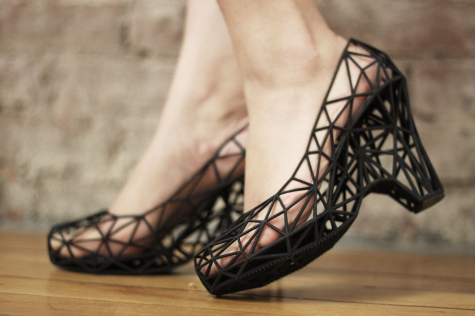
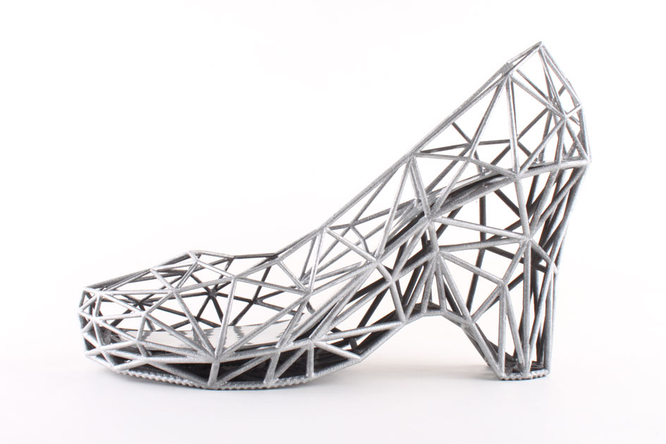
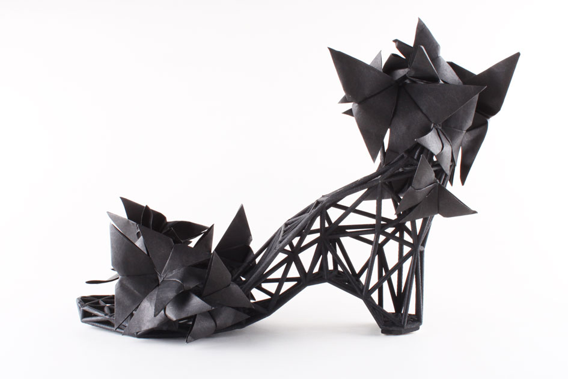
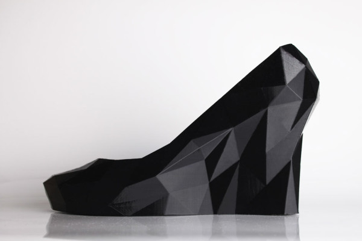
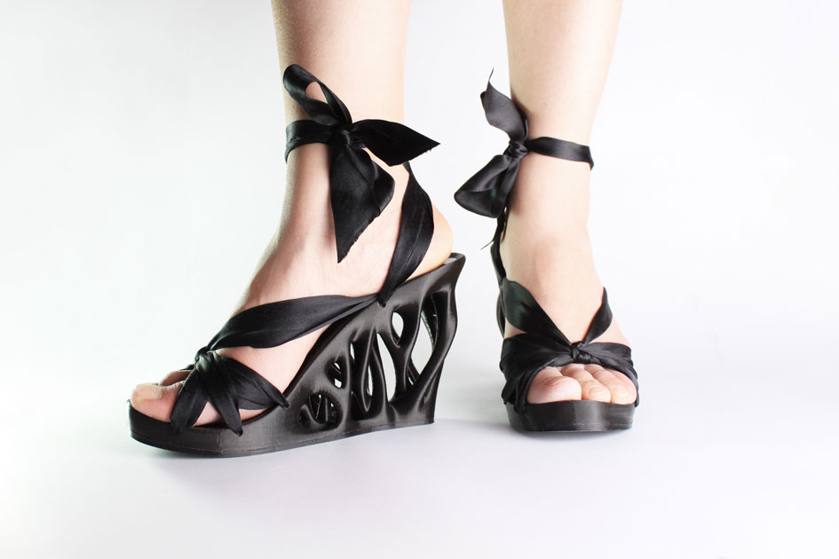
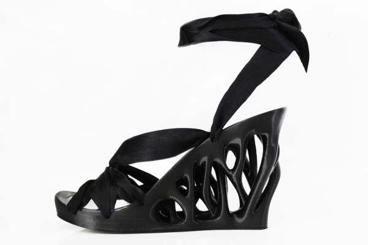
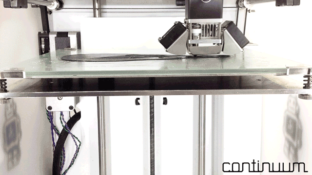
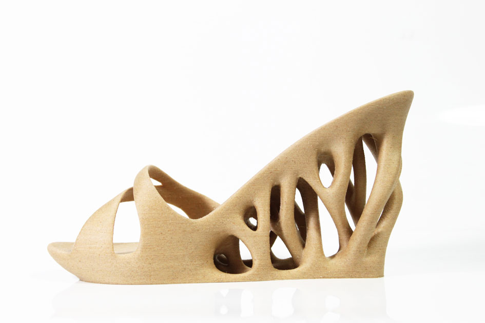
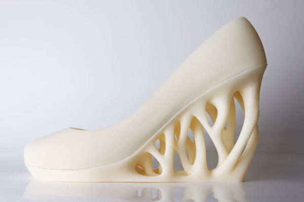
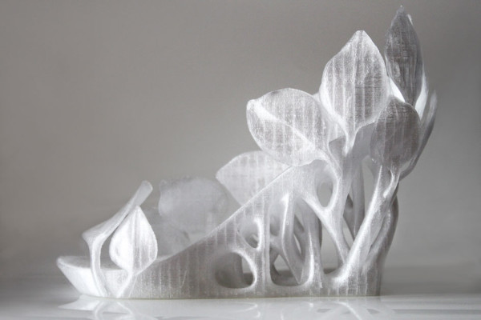
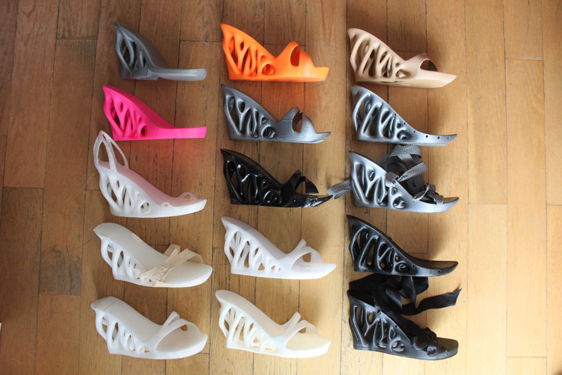
Achieving comfortable wearability with a design printable on a desktop FDM printer was the bulk of the challenge. No support material.
After dozens of prototypes, I settled on silk ribbon laces and 2 separate TPU pieces (the insole and sole), that were 3D printed on a separate machine.
In the years since, many people have made other 3D printed shoes designs. Yet no one has had the same obsession with getting every curve precisely right for that elegant look.
Press
- The Guardian World's First 3D-Printed Shoe Collection — in Pictures →
- NPR Weekly Innovation: 3-D Printed Fashion For Your Feet →
- The Verge Continuum STRVCT 3D-Printed Shoe →
- HuffPost 3D-Printed Shoes Prove The Future Is Here And It's Really Stylish →
- Powerhouse Museum Permanent Collection — STRVCT Shoes →
- YouTube Continuum Fashion — 3D Printed Shoes →
- Toronto Star 3-D Shoes Are a High-Concept Thrill →